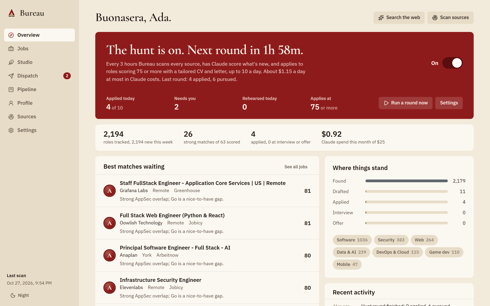
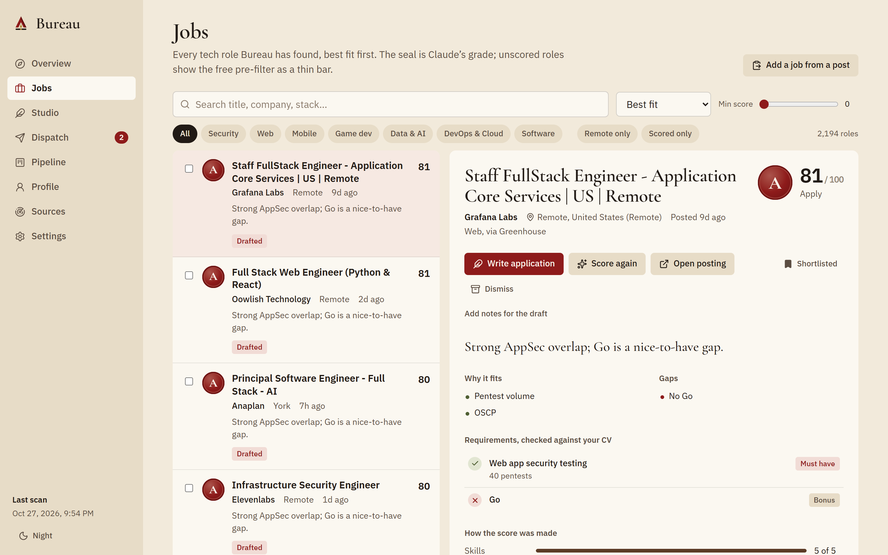
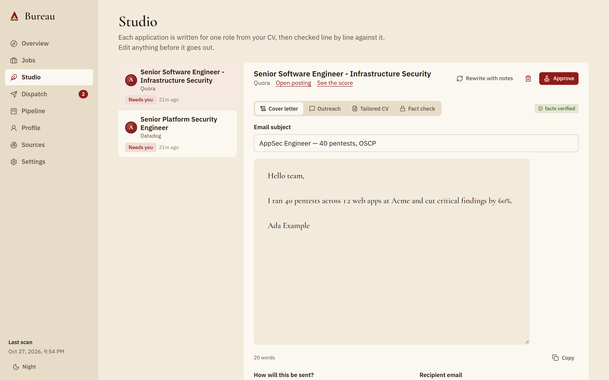
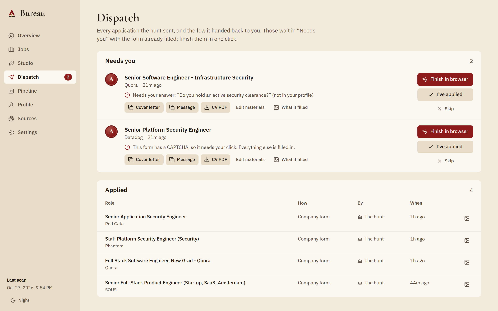
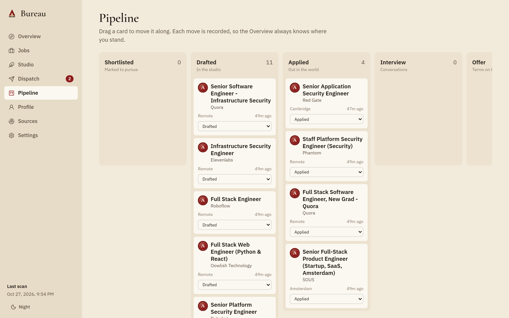
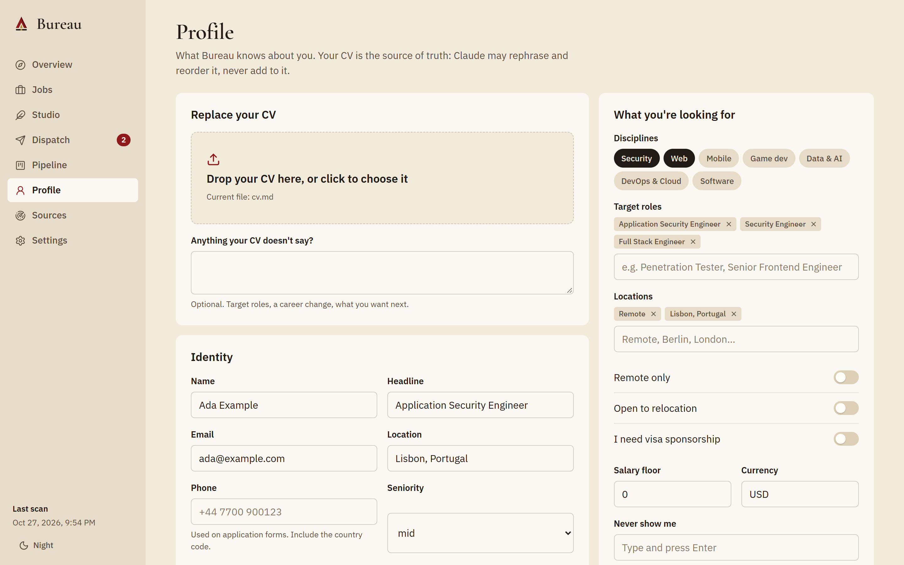
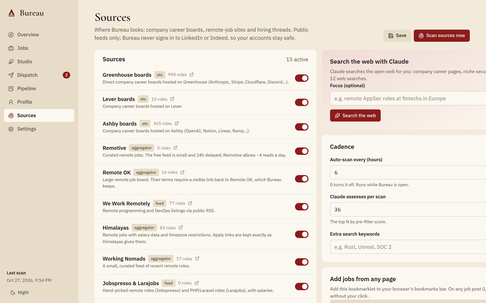
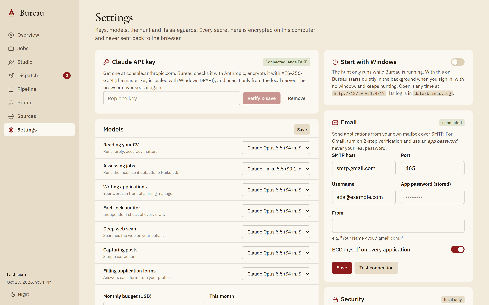
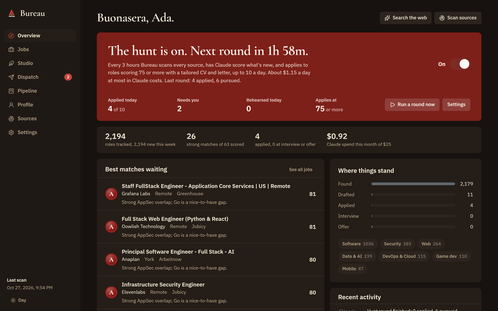

A local-first, Claude-powered workshop that scouts the best tech roles on the open web, weighs each one against who you really are, and writes every application by hand, in your voice, from your facts.
| III | The concept | An assassin's bureau for a job hunt |
| IV | The insignia | Construction, clear space, misuse |
| V | Colour | Robe, sash, leather, brass, steel |
| VI | Colour in use | Proportion, meaning, Night in Rome |
| VII | Typography | Newsreader, Hanken Grotesk, Plex Mono |
| VIII | Voice | How Bureau speaks |
| IX | Signature components | Seals, the dial, buttons |
| X | Everyday components | Tags, chips, fields, callouts |
| XI | Layout & rhythm | Grid, spacing, radius, elevation |
| XII–XVI | The screens | Overview to Settings |
| XVII | The hunt | The autonomous loop, its limits and its cost |
| XVIII | The engine | Every step, and how the score is made |
| XIX | Security architecture | Built to leave localhost safely |
| XX | Craft & access | Motion, accessibility, colophon |
Bureau is a working tool before it is a costume. The Renaissance kit gives it a memorable character, but every flourish has a job: a seal is a grade, a sash marks where you are, brass marks what is precious. When style and clarity disagree, clarity wins.
In Renaissance Rome, a master assassin ran a hidden bureau: scouts went out across the city, contracts came in, each one was studied, prepared for, and struck with precision, often without the master lifting a finger. Bureau runs your job hunt the same way.
The visual language is drawn from that era's most recognisable kit: the master's cream hooded robe, the crimson sash and cape lining, the oiled leather of bracers and belts, the brass of buckles and insignia, the steel of a concealed blade, and the parchment pages of a polymath inventor's codex. Bureau's insignia, palette and type are our own; nothing is borrowed from any game's trademarks.
| In the bureau | In the app | Why the metaphor holds |
|---|---|---|
| The hunt | Autonomous loop | One switch: it scouts, weighs, tailors and applies on a timer |
| Scouts | Sources | 16 connectors and a Claude deep scan that go out and report back |
| Contracts | Jobs | Every role is weighed before you commit time to it |
| Synchronisation | Fit score | How closely a role syncs with your real CV, 0–100 |
| Wax seal | Grade | S · A · B · C · D, pressed only after Claude's assessment |
| Atelier | Studio | Where letters and tailored CVs are drafted |
| Codex | Profile | Your CV as the single source of truth |
| Dispatch | Outbox | What the hunt sent, and the few it hands back to you |
| Ledger | Pipeline | Every move recorded, from found to offer |
| Armory | Settings | Keys, engines and safeguards |
Keep clear space equal to the strap height (5 units) on every side. Minimum size: 16 px on screen, 6 mm in print. Below 24 px, drop the hood's shadow facet.
Six families, each lifted from one piece of the kit. Cream is the house colour and always the default theme.
Hood white for raised surfaces, linen for cards, parchment for the page, vellum for wells, folded edge for strong borders.
Each accent has a soft tint for backgrounds and a deep tone for pressed states and text on tints.
An Italian olive rather than a digital green, kept for "met", "sent" and "verified". It never competes with crimson.
| crimson | The one thing to do next (primary button), where you are (the sash), grades A and S, critical requirements, failure. |
| brass | Focus rings, ornaments, important-but-not-critical, grade B. Never used for body text. |
| leather | Structure and quantity: progress bars, the pre-filter, the scan console. |
| olive | Verified facts, met requirements, sent applications. |
| steel | Neutral metadata: sources, counts, unscored states. |
Colour never carries meaning alone. Every state also has a word, a mark (✓ ~ ✕) or a position.
Surfaces are warm umber, never grey or blue-black. Crimson lifts to #C4473D and brass to #CFAE5C so both keep their contrast. Cream stays the default; night is one click away in the sidebar.
A sturdy text serif with optical sizes: the voice of a codex, and readable from a page title down to a letter.
Hanken Grotesk stays crisp at 13 px in dense lists and has true tabular figures; Newsreader's optical sizes carry both the page titles and the letters.
IBM Plex Mono appears only in the raw scan log.
| Aa | Hero · 4.0 · display |
| Aa | Page title · 2.625 |
| Aa | Section · 1.375 |
| Aa | Row title · 0.9375 / 600 |
| Aa | Body · 0.9375 / 400 |
| Aa | Meta · 0.8125 |
| Aa | Label: 0.8125, sentence case, never tracked capitals |
All fonts are bundled locally (SIL Open Font License). Bureau makes no font requests over the network.
Navigation and buttons use ordinary words: Jobs, Studio, Dispatch, "Draft application". The Renaissance flavour lives in eyebrows, headlines and empty states, never in a control you need to understand.
Bureau never inflates. Scores come with their working. A missing must-have is shown as missing. The fact lock calls out invented claims, even in our own drafts.
Short sentences, active voice, no exclamation marks, no hype. A good line reads like a trusted colleague: "4 strong matches await your eye."
| Write | Not |
|---|---|
| The scouts are out. Results will appear as they come in. | 🚀 Scanning started!! |
| Claude declined this request (cyber). | Oops! Something went wrong. |
| The fact lock found 2 claims your CV doesn't support. | Your letter is ready to wow recruiters! |
| Nothing here yet. Loosen the filters, or run a scan. | No data. |
Claude reads your CV once and writes down how you write. Every letter follows that voice plus your tone setting. The house bans: "passionate", "fast-paced", "team player", "leverage", "synergy", "I am writing to apply", flattery, and em-dash flourishes.
| S ≥ 88 | A ≥ 78 | B ≥ 65 | C ≥ 50 | D < 50 |
| Apply | Consider | Research | Skip | |
Each grade maps to a decision band. Pressed only after Claude's assessment. Unscored roles carry a blank pale seal. Sizes: 30, 40 and 64 px.
The seal and a plain number, with the decision in words. It replaced a progress ring that only decorated the score.
Every figure is set in Hanken Grotesk with tabular numerals. The serif never labels or measures.
When the hunt is on, a band of crimson draws across the top of the Overview, the robe's sash made into a status. It's the one bold element; nothing else uses that colour at that scale.
Selected chips invert to ink, so they read as pressed without relying on colour.
Sidebar 248 px · fluid main column with 24–48 px gutters · content splits 1.55 : 1 (primary : context). Below 1180 px, splits stack; below 820 px, the sidebar becomes a top bar.
| Token | Value | Use |
|---|---|---|
| space | 4 · 8 · 12 · 16 · 24 · 32 · 48 · 64 | A strict 4-point scale |
| radius | 4 · 8 · 14 · pill | Inputs · buttons · cards · tags |
| line | ink at 12% / 22% | Hairlines · strong borders |
| surfaces | parchment, vellum, linen | Separated by tone, not outlines or shadows |
| selection | a darker tone of the row | Never a coloured side border or glow |
| depth | leather 55%, y 18, blur 48 | Only things that float: dialogs, toasts |
| motion | 160–240 ms, ease-out | State changes only; one authored moment |
| ornament | none | Removing decoration leaves space; it isn't refilled |
The one shadow is tinted leather, never neutral grey, so even depth stays warm.
The control room: the hunt as a crimson sash, then a one-line summary, the best matches waiting, and where everything stands.

A ranked list on the left; on the right, Claude's full working for the selected role.

The Studio drafts a cover letter, an outreach message and a tailored ATS-safe CV for one role, then runs the fact lock. Dispatch is the hunt's outbox: everything it applied to, plus "Needs you", the forms it filled but couldn't finish honestly, one click from done.


A drag-and-drop ledger from shortlist to offer, and the Codex: your CV read into a structured profile, your hunt preferences, your voice and your portfolio evidence.


Sixteen connectors, curated company boards, cadence and the Claude deep scan, beside the Armory: keys, a model per task, budget, autopilot, email and security.


One switch on the Overview. While Bureau runs (it can start with Windows), each round it scouts, has Claude weigh what's new, tailors a CV and letter for every role above your bar, and applies by email or through the company's own form in a real browser.
| Scoring a role | ≈ $0.001 | Haiku 5.5 |
| One application | ≈ $0.34 | Opus 5.5: draft, audit, form answers |
| Defaults, running all day | ≤ $3.65/day | 8 rounds × 40 roles + 10 applications |
Shown live in Settings, from your own spend once there's history. The monthly budget pauses the hunt when it's reached.
Set in Newsreader, Hanken Grotesk and IBM Plex Mono. Built with Node 24, Fastify, SQLite, React 19, Vite, Playwright (driving your own Chrome or Edge) and the Anthropic TypeScript SDK. Icons from Lucide at a 1.8 stroke. Insignia and palette are original work for Bureau.

Night in Rome: the same atelier by lamplight.